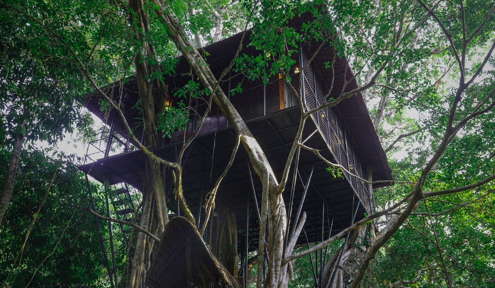
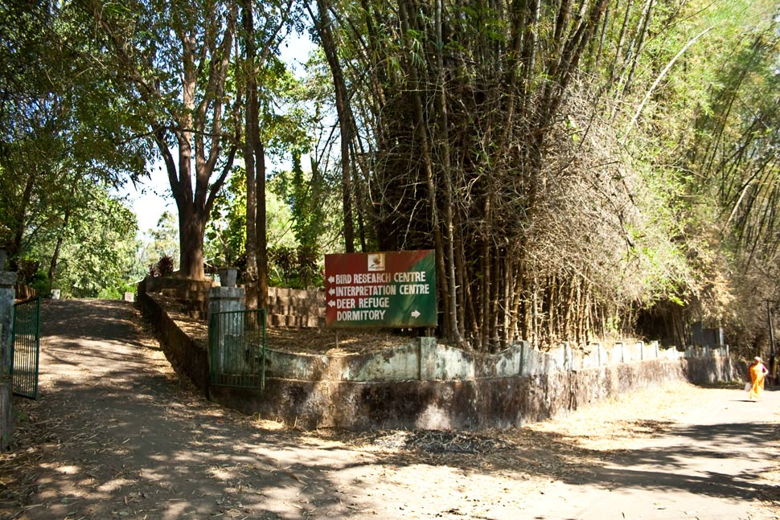

Explore Kerala’s Treehouses and Wildlife Sanctuaries
Immerse yourself in nature with unique treehouse stays and thrilling wildlife experiences in Kerala.
Treehouses in Wayanad
Experience a stay in luxurious treehouses amidst the dense forests of Wayanad. These eco-friendly accommodations offer panoramic views, serene surroundings, and a chance to connect with nature. Perfect for honeymooners and nature enthusiasts, Wayanad treehouses combine comfort and adventure in the heart of the wilderness.


Periyar Wildlife Sanctuary
Located in Thekkady, Periyar Wildlife Sanctuary is a haven for nature and wildlife enthusiasts. Embark on bamboo rafting, nature walks, or jeep safaris to explore its diverse flora and fauna, including elephants, tigers, and exotic birds. The sanctuary also offers serene boat rides on Periyar Lake.
Munnar Wildlife Adventures
Munnar is not just about tea plantations; its Eravikulam National Park is home to the endangered Nilgiri Tahr. Visitors can trek through its lush landscapes, enjoy guided nature walks, and spot vibrant butterflies and rare species of birds in this biodiversity hotspot.


Thattekad Bird Sanctuary
Known as the Salim Ali Bird Sanctuary, Thattekad is a paradise for birdwatchers. With over 300 species of birds, including hornbills, bee-eaters, and woodpeckers, the sanctuary provides a serene yet adventurous escape into Kerala’s natural beauty.